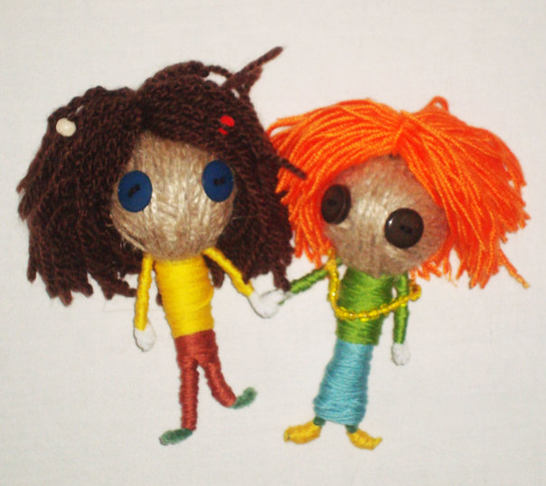

Krásné jarní počasí mě dnes inspirovalo k založení nové rubriky. Léto co léto mě totiž chytá jakýsi tvůrčí zápal a nutkavá potřeba kreativně se projevit…mé rané výtvory asi ještě visí u babičky v kuchyni :D, nicméně posledních pár let už to pravidelně odnáší jenom moje staré džíny, z kterých si s oblibou stříhám kraťasy (to je můj tradiční prázdninový sport :D), vyšívám na ně infantilní motivy a nebo korálky (pozůstatky mé hippies-éry :D). Když přišly do módy úzké rovné džíny, jedny jsem se z trucu pokusila rozšířit na zvony ala Horečka sobotní noci O:) a jedno léto se zase neslo v duchu přebarvování oblečení, za což vlastně mohla náhoda a fakt, že jsem čuně, protože jsem si u Terky polila svou světle zelenou mikinu kafem a už to nešlo vyprat, takže jsem ji elegantně přebarvila na černo :D…Minulé prázdniny prozměnu vedla výroba náramků z korálků, neboť mě kamarádka z fakulty zavedla do brněnské korálkárny, kde jsem objevila ráj na zemi :)…no a letos bychom se konečně mohli s Péťou rozhoupat k tomu fimu, které už nám půl roku leží ve skříni - doufejme, že seženeme nějakou funkční troubu (případní hostitelé nechť se hlásí v komentáři :-).
Minulý týden jsem se nicméně stačila kreativně vybít víc než dost :-)…Už delší čas jsem měla vymyšleno, že bych mohla Péťovi k výročí našeho seznámení a divoké akce na Yachtu :D vyrobit kofoláčky, kteří by nám byli v rámci možností aspoň trochu podobní. K tomu mě inspirovala prozměnu Pavča, která nám nadělila vlasaté kofoláčky k minulým Vánocům a vypadalo to, že nebude až tak těžké je vyrobit. Zagůglila jsem a našla hned několik návodů, podstata byla ale vlastně všude stejná. Já se rozhodla pro postup, který byl doplněný i názornými fotografiemi. Kdo by si chtěl taky kofoláčka vytvořit, odkazuji na tyto stránky, kde najdete veškeré potřebné info: http://kofolacci.blogspot.com/2009/06/jak-vyrobit-koflacka.html
Po nastudování návodu jsem si vyrobila nákupní seznam:
- motouz
- drátky na čištění dýmek
- knoflíky na oči
- různobarevné bavlnky
- klubíčko vlny na vlasy
Pokud se rozhodnete vyrazit na nákup těchto pomůcek a nechce se vám obíhat celé Brno, doporučuju vyrazit na Hybešku, kde najdete vedle sebe všechny obchody, které potřebujete - papírnictví, tabák, švadlenku a malý obchod, kde prodávají extra jenom vlnu. Pak už nezbývá, než se pustit do práce podle návodu :-). Musím říct, že nejhorší na celé výrobě je umotání hlavy - je potřeba ji hodně utahovat, aby se vám nerozjížděla a nerozpadla. Mně se opravdu pěkná hlavička povedla až na třetí pokus a Pepa pozorující mé snažení z postele je svědkem, že jsem u toho nadávala jako špaček :D…každopádně když se to pak začalo rýsovat, ještě jsem měla chuť hodně si s kofoláčkama vyhrát, takže jsem Péťovi umotávala z vlny několik dredů (dokonce i s korálkama :D!) a sobě jsem udělala korálový náhrdelník, ale trochu jsem pozapomněla, že kofoláčci nemají krk, takže mi náhrdelník sjížděl někam k pasu…ale to už jdou detaily :D. Výsledek posuďte sami…

Milíčovi
Suma sumárum to bylo opravdu skvělé a kreativní odpoledne, hrozně jsme se u toho s Pepou nasmály a vyplodily mnoho neuveřejnitelných hlášek :D. Zkrátka až se někdy o prázdninách budete nudit, nekupujte si medvídka mývala - radši si kupte drátky na čištění dýmek a motouz a umotejte si svého kofoláčka O:-)…
Ani mě nenapadlo, že bych se mohla vytasit s hedvábím… Ale to by chtělo spíš album na rajčeti 8-)